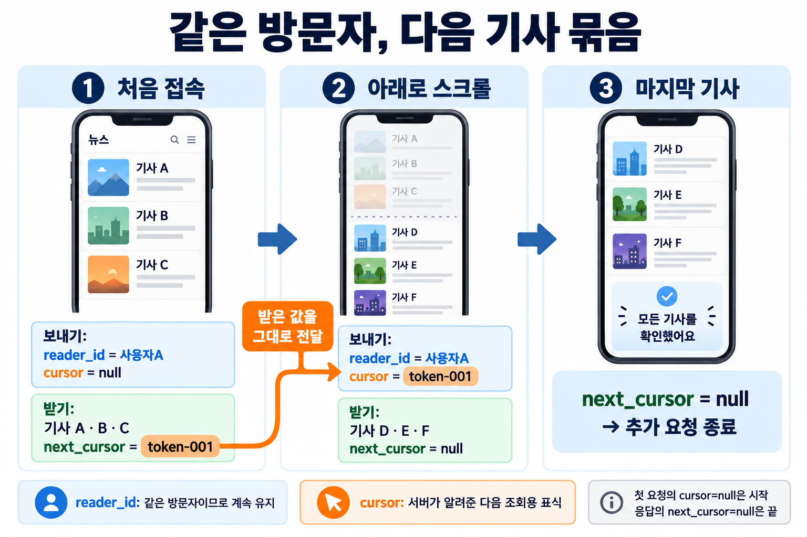

뉴스 조회·행동 수집 인터페이스와 로깅 연결 상세 명세
이 문서는 인터페이스와 구현할 측정 규칙을 설명한다. 프론트 행동 측정·전송은 구현 예정으로 기술한다. 설명용 JSON과 수치는 실제 측정 결과가 아니다.
문서에서 합의 상태를 읽는 방법
| 표기 | 의미 | 사용 기준 |
|---|---|---|
| [팀] | 팀 전체가 합의한 계약 | 팀 합의 기록이 확인됐을 때만 사용 |
| [확정·본 대화] | 이 자료를 작성하며 사용자와 결정한 설계 | 팀 전체 합의나 구현 완료를 뜻하지 않음 |
| [제안] | 팀장님 초안 또는 이 자료가 제시하는 선택지 | 담당자와 계약 확인 후 채택 |
| [가정] | 설명·연결을 위해 임시로 둔 전제 | 성립하지 않으면 설계를 조정 |
| [로컬 코드] | 저장소에 존재하는 개발용 구현 | 운영 연결·실행 검증 완료와 구분 |
[확정·본 대화] reader_id 명칭, cursor로 이어지는 연속 position, 목록 원본 보존·연속 1초 유효 노출, 상세 5초 분할·잔여 전송을 사용한다. [제안] 추론 서버 API·모델 메타데이터 확장·session_id는 팀장님 초안에서 가져온 검토 내용이다. [가정] 아래 시나리오의 시각·기사 수·점수는 설명용이다. [팀] 표시는 이 자료에서 새로 주장하지 않는다.
1. 기사 목록 조회부터 행동 기록 저장까지의 처리 순서
사용자 → 프론트의 목록 요청 {reader_id, cursor}
→ 뉴스 서버의 목록 응답 {request_id, served_at, items, next_cursor}
→ 각 기사 표시와 impression_id 보관
→ 노출·기사 열기·좋아요·해제 이벤트 확정
→ {events: [이벤트 한 건]} 즉시 전송
→ 로깅 서버 검증·SQLite 저장·이벤트별 응답
→ 로컬 JSONL 파일 내보내기
→ 추후 실제 GCS·정제·집계 연결반환 기록은 뉴스 서버가 로깅 서버에 등록하고, 브라우저 행동은 웹 프록시를 거쳐 전달하는 방향이다. 내부 인증 토큰은 브라우저에 넣지 않는다.
2. 사용자·기사·행동 기록을 ID로 연결하는 방법
| 필드 | 의미 | 생성·유지 규칙 |
|---|---|---|
| reader_id | 독자 식별 | 프론트에서 UUID를 생성하고 유지하는 방향. 저장 위치·만료·초기화 정책은 별도 결정 |
| request_id | 목록 응답 한 번의 식별자 | 서버 생성. 여러 기사가 같은 request_id에 속할 수 있음 |
| article_id | 기사 자체의 식별자 | 문자열. 같은 기사를 다시 반환해도 기사 ID는 같을 수 있음 |
| impression_id | 특정 목록 응답에서 기사 하나를 반환한 건의 식별자 | 서버 생성. 프론트가 기사 ID로 대체하거나 임의 발급하지 않음 |
| event_id | 행동 또는 측정 구간 한 건의 식별자 | 프론트 UUID. 재시도는 같은 ID, 실제 새 행동은 새 ID |
| cursor | 다음 목록을 가져올 서버 표식 | 서버 응답값 그대로 재사용. 프론트가 해석·조립하지 않음 |
impression_id를 알면 서버의 반환 기록에서 reader_id·article_id·request_id·position을 찾을 수 있다. 따라서 행동 본문에 reader_id·article_id·position을 반복해서 보내지 않는다. 반환 기록의 보관·조회가 전제이며 ID를 아는 것 자체는 권한이 아니다.
request_id=req-001
├─ article_id=A, impression_id=imp-001, position=1
└─ article_id=B, impression_id=imp-002, position=2
기사 A 클릭: event_id=새 UUID, impression_id=imp-001
기사 A 다시 클릭: event_id=다른 UUID, impression_id=imp-001
첫 클릭 재전송: event_id=첫 UUID 그대로, 본문 그대로위 req-001·imp-001은 설명용이다. event_id 예시를 실제 전송할 때는 유효한 UUID를 사용한다.
3. 첫 기사 목록과 다음 기사 목록을 요청하는 방법

첫 요청부터 다음 목록 조회까지의 예시다. token-001은 설명용 cursor이며 실제로는 서버가 준 값을 그대로 사용한다.
첫 요청의 의미는 같은 사용자에게 첫 기사 묶음을 달라는 것이다.
{
"reader_id": "550e8400-e29b-41d4-a716-446655440000",
"cursor": null
}| 필드 | 형식 | 처리 규칙 |
|---|---|---|
| reader_id | 문자열 UUID 방향 | 목록을 넘길 때 유지. 매 요청마다 새 ID를 만들지 않음 |
| cursor | 문자열 또는 null | 첫 요청 null. 이후 next_cursor 그대로 전달 |
목록 요청에는 reader_id와 cursor를 사용한다. limit·category·Idempotency-Key를 임의 추가하지 않는다. 페이지 크기와 카테고리 요청은 별도 계약으로 정한다.
next_cursor가 null이면 다음 요청을 중단하고 종료 상태를 표시한다. position은 같은 목록을 cursor로 이어 조회하는 동안 계속 증가하는 전체 목록 순위다. 첫 응답이 1~20이면 다음 응답은 21~40, 다섯 번째 응답은 81~100이다. 서버가 position을 정해 반환하고 프론트는 그 값을 그대로 사용한다. 요청 재시도에서 새 request_id가 반환될 수 있으므로, 실제로 화면에 채택한 응답의 문맥을 사용한다.
새로고침·필터 변경 등으로 새로운 목록을 시작하면 position은 다시 1부터 시작한다. 같은 cursor 흐름의 다음 묶음과 새 목록 시작을 구분한다. 재시도만으로 순위를 추가 증가시키지 않도록 cursor와 position의 연결 규칙을 백엔드에서 정한다. impression_id는 정렬용 번호가 아니며, 해당 반환 기록의 position으로 순서를 확인한다. 이 변경은 발표자료의 확정 설계이며 기존 API·코드의 순위 계산은 별도로 맞춰야 한다.
20개씩 기사 목록을 받는 예
첫 응답 req-001: position 1~20
다음 응답 req-002: position 21~40
다섯 번째 응답 req-005: position 81~100
→ 전체 100번째 기사의 position은 100
각 응답의 request_id와 기사별 impression_id는 별도로 유지한다.운영 목록 API의 URL·HTTP method는 별도 합의 대상이다.
4. 서버가 프론트에 전달하는 기사 목록 JSON
태원 님의 응답 구조를 따른 기사 A 한 건의 설명용 전체 예시다. 실제 응답의 items에는 여러 기사가 들어간다.
{
"request_id": "req-001",
"served_at": "2026-11-02T09:00:00+09:00",
"items": [
{
"article_id": "A",
"impression_id": "imp-001",
"position": 1,
"title": "기사 A 제목",
"subtitle": "기사 A 부제",
"summary": "기사 A 요약",
"paragraphs": ["첫 번째 문단입니다.", "두 번째 문단입니다."],
"tags": ["예시 키워드"],
"category": "스포츠",
"subcategory": "스포츠포토",
"published_at": "2026-11-02T08:00:00+09:00",
"author": "가상뉴스 편집팀",
"publisher": "예시 언론사",
"language": "ko-KR",
"is_synthetic": true,
"image_url": "https://example.com/images/A.png",
"image_caption": "AI 생성 이미지 · 실제 사건 사진이 아닙니다."
}
],
"next_cursor": "opaque-next-001"
}example.com 이미지 주소는 설명용이며 이미지 제공을 검증한 URL이 아니다. 응답에 본문까지 있으므로 현재 어댑터는 채택한 기사를 캐시에 저장하고 목록에서 상세로 이동할 때 사용한다. 별도의 운영 상세 API까지 연결된 상태는 아니다.
5. 받은 기사 데이터를 제목·본문·이미지로 표시하는 방법
| 필드 | 형식 | 용도·처리 |
|---|---|---|
| request_id / served_at | 문자열 / 시간대 포함 ISO 시각 | 응답 식별·생성 시각 |
| items / next_cursor | 기사 배열 / 문자열 또는 null | 목록과 다음 묶음 조회 |
| article_id / impression_id | 문자열 | 기사 조회 문맥·행동 연결 |
| position | 1 이상의 정수 | cursor로 이어지는 전체 목록 순위. 다음 응답에서도 증가하며 서버 items 순서를 유지 |
| title / category | 문자열 | 제목·분류 표시 |
| subtitle / summary | 문자열 또는 null | 부제·요약. 없는 내용을 지어내지 않음 |
| paragraphs | 문자열 배열 | 상세 본문을 문단별 일반 텍스트로 표시 |
| tags | 문자열 배열 | 키워드 데이터. 수신 필드가 있다고 현재 화면에 모두 표시하는 것은 아님 |
| subcategory | 문자열 또는 null | 하위 분류 |
| published_at | 시간대 포함 시각 | 기사 발행 시각. 응답 시각·행동 시각과 구분 |
| author / publisher / language | 문자열 또는 null | 작성자·언론사·언어. publisher가 null이면 미제공 표시 |
| image_url / image_caption | 문자열 또는 null | 공개 이미지 주소·설명. 로컬 파일 경로를 URL로 간주하지 않음 |
| is_synthetic | boolean | 가상 기사 고지 |
현재 contract-feed.js는 외부 이름을 화면 내부 이름으로 매핑한다. 예: article_id→id, published_at→publishedAt, impression_id→impressionId. 모든 외부 필드를 그대로 내부 객체에 복사하지는 않는다. 미표시 필드의 추가 표시는 별도 작업이다.
본문의 HTML 문자열은 실행하지 않고 텍스트로 표시한다. 이미지 없음·로드 실패의 대체 표시를 제공한다.
6. 서버가 보낸 기사와 화면에 실제로 보인 기사를 구분해 기록
impression은 서버가 기사 목록에 포함해 보낸 기회이고, exposure는 브라우저가 측정한 실제 표시 구간이다. 서버가 보냈다는 이유만으로 사용자가 봤다고 기록하지 않는다.
예를 들어 20개 반환·5개 실제 노출·1개 클릭이면 반환 기준 클릭률은 1/20, 실제 노출 기준 클릭률은 1/5이다. 둘은 분모가 다른 지표이며 어느 하나를 무조건 틀린 값이라고 하지 않는다. 동일 기사 반복 노출의 집계 단위와 클릭 관측 기간은 데이터·ML 담당자와 정의해야 한다.
실제 노출도 사용자가 읽고 이해했다는 증거는 아니다. 클릭이 없는 표본을 학습 라벨 0으로 확정하려면 관측 종료 시점·지연 허용·중복 처리·빠른 클릭 규칙이 먼저 필요하다. 이벤트 수집만으로 모델 품질이나 CTR 향상을 입증하지 않는다.
7. 목록 카드와 상세 화면이 보인 시간을 측정하는 조건
이 절은 확정한 규칙을 앞으로 구현하기 위한 설명이다. 목록은 표시 조건이 시작·종료될 때 한 구간을 기록하고, 상세는 활성 체류를 5초 단위와 이탈 시 잔여 구간으로 나누어 exposure로 기록한다. 아래 숫자는 이해를 위한 예시이며 실측값이 아니다.
7-1. 영어 용어를 먼저 읽는 방법
| 용어 | 쉬운 뜻 | 이 설계에서의 예 |
|---|---|---|
| exposure | 기사가 화면에 보인 구간 | 기사 카드가 조건을 충족해 2초간 보이면 한 구간 |
| list / detail | 기사 목록 / 기사 상세 화면 | 카드 모음은 list, 본문을 읽는 화면은 detail |
| visible | 브라우저가 이 페이지를 보이는 상태로 판단 | 뉴스 탭을 선택한 상태. 실제로 집중해서 읽는다는 뜻은 아님 |
| hidden | 브라우저가 이 페이지를 숨겨진 상태로 판단 | 다른 탭을 선택하거나 창을 최소화한 상태 |
| scroll | 화면을 위아래로 움직이는 동작·이벤트 | 마우스 휠, 터치로 목록을 움직임 |
| 300ms | 0.3초 | 마지막 scroll 이후 0.3초 동안 추가 스크롤이 없으면 정지로 판단하는 안 |
| impression_id | 서버가 기사 한 건을 목록에 넣어 보낸 번호 | imp-001은 이번 목록의 기사 A에 연결 |
| event_id | 행동·측정 구간 한 건의 번호 | 기사 A를 다시 보면 같은 impression_id에 새 event_id |
| event_time / ended_at | 구간 시작 / 종료 시각 | 00:00:01Z에 시작해 00:00:03Z에 종료 |
| duration_ms | 이 구간의 길이, 밀리초 | 2초는 2000ms. 이전 구간까지 더한 누적값이 아님 |
| performance.now() | 경과 시간을 재는 브라우저의 스톱워치 값 | 시작 1500, 종료 3500이면 차이 2000ms |
| UTC / Z | 시간대가 바뀌어도 비교할 수 있는 기준 시각 / UTC 표시 | 00:00:00Z는 한국 시간 오전 9시 |
visible·hidden은 문서 표시 상태다. 다른 창이 일부를 가렸거나 사용자가 자리를 비운 것까지 모두 판단하지 못한다.
7-2. 목록과 상세는 측정 조건이 다릅니다
| 화면·조건 | 측정 시작 또는 재개 | 구간 종료 |
|---|---|---|
| 목록 list | 카드 면적 50% 이상 보임 + 문서 visible + scroll 정지 | 50% 미만·scroll 시작·hidden·다른 화면으로 이동 |
| 상세 detail | 유효 impression_id가 있는 상세 + 문서 visible | 5초마다 분할 전송. hidden·화면 이동 시 잔여 전송. 상세 scroll은 측정 유지 |
| 같은 카드 다시 보임 | 같은 impression_id로 새 구간 시작 | 새 event_id로 해당 구간 기록 |
목록에서는 빠르게 지나가는 카드와 멈춰서 본 구간을 나누려고 scroll 중 측정을 멈추는 방향이다. 상세에서는 본문을 내리며 읽는 것도 체류에 포함하므로 scroll 중에도 측정을 이어간다.
7-3. 목록에서 기사 A를 보고 스크롤한 예
한국 시간 09:00:00.000 기사 A가 화면에 70% 보이지만 scroll 중 → 시작 안 함
한국 시간 09:00:00.700 마지막 scroll 이벤트 발생
한국 시간 09:00:01.000 추가 scroll 없이 300ms 경과, visible 유지 → 시작
한국 시간 09:00:03.000 사용자가 다시 scroll → 구간 종료
측정한 exposure 구간 = 09:00:01 ~ 09:00:03 = 2000ms{
"events": [{
"event_id": "550e8400-e29b-41d4-a716-446655440001",
"event_type": "exposure",
"impression_id": "imp-001",
"page_type": "list",
"event_time": "2026-11-03T00:00:01.000Z",
"ended_at": "2026-11-03T00:00:03.000Z",
"duration_ms": 2000
}]
}이후 위로 돌아와 같은 기사 A를 1.5초 보면 impression_id는 imp-001 그대로, event_id는 새로운 UUID, duration_ms는 1500인 별도 구간으로 보낸다. 두 번째 duration_ms에 첫 구간 2000을 더해 3500으로 보내지 않는다.
7-4. 상세에서 읽다가 다른 탭으로 이동한 예
09:00:10 기사 A 상세 표시 + visible → detail 구간 시작
09:00:12 본문을 아래로 scroll → 계속 측정
09:00:15 다른 탭으로 이동해 hidden → 구간 종료, duration_ms=5000
09:00:25 뉴스 탭으로 돌아와 visible → 새 detail 구간 시작
09:00:28 피드로 돌아감 → 구간 종료, duration_ms=3000
기록은 5초 구간 + 3초 구간, 합계 8초
다른 탭에 있던 10초는 포함하지 않음두 구간은 같은 impression_id를 사용하고 event_id는 다르다. page_type은 두 구간 모두 detail이다. 유효 impression_id는 서버의 기사 반환 기록에 연결할 수 있는 값이라는 뜻이며, 직접 상세 진입의 ID 발급·복구 정책은 별도 정해야 한다.
7-5. 시각과 경과 시간을 따로 기록하는 이유
event_time과 ended_at은 “언제 발생했나”를 남기는 시계다. performance.now()는 “얼마나 지났나”를 재는 스톱워치다. 시작 값이 1500.2, 종료 값이 3500.6이면 2000.4ms를 반올림해 duration_ms=2000으로 기록하는 방식이다. performance.now()의 원래 숫자를 서버에 보낼 필요는 없다.
컴퓨터 시계가 중간에 조정되면 event_time·ended_at 차이가 스톱워치 차이와 달라질 수 있다. duration_ms를 두 시각의 차이와 항상 동일하다고 가정하지 않는 이유다. 다만 종료 시각이 시작보다 앞서는 입력은 현재 로깅 수신 검증에서 거절되므로 시계 역행의 처리 정책도 정해야 한다.
7-6. 목록의 유효 노출은 연속 1초, 상세 체류는 5초씩 전송
확정한 설계다. 구현 완료를 뜻하지 않는다. 목록은 원본 구간의 보존과 유효 노출 판정을 구분하고, 상세는 읽는 중에도 기록을 나누어 전달한다.
| 대상 | 원본 기록·전송 | 분석 기준 |
|---|---|---|
| 목록 list | 기존 면적·visible·스크롤 정지 조건을 만족한 모든 양수 구간을 종료 시 전송 | 연속 1000ms 이상 보인 구간을 유효 노출로 분류 |
| 목록의 빠른 클릭 | 1초 미만 노출이어도 article_open은 별도로 전송 | 유효 노출 없이 발생한 클릭으로 구분. 클릭을 버리거나 노출을 만들어 채우지 않음 |
| 상세 detail | 활성 체류를 5000ms마다 나누어 즉시 전송. 이탈·hidden 시 남은 양수 구간도 전송 | 최소 1초 필터 없이 받은 구간을 중복 제거 후 합산 |
목록 카드가 0.2초 보였다면 duration_ms=200인 원본을 저장하지만 유효 노출에는 포함하지 않는다. 2초 연속 보였다면 duration_ms=2000을 저장하고 유효 노출에 포함한다. 0.6초씩 서로 떨어진 두 구간은 합쳐서 1.2초 유효 노출로 만들지 않는다. 현재 필드 구조에서는 분석 단계가 page_type=list, duration_ms>=1000인 구간을 판정한다. 별도 프론트 필드를 임의 추가하지 않는다.
0.5초 만에 기사를 눌렀다면 노출 원본 500ms와 article_open을 각각 보존한다. 유효 노출 기준 클릭률은 유효 노출에 연결된 클릭으로 계산하고, 빠른 클릭은 별도로 집계한다. 모든 클릭을 유효 노출 수로 나누면 분자와 분모의 대상이 달라지므로 사용하지 않는다. 동일 impression_id의 반복 노출·클릭 집계 단위와 관측 기간은 데이터 담당자가 별도로 맞춰야 한다.
상세에서 12.4초 읽고 피드로 돌아온 경우
시작 ~ 5초 → duration_ms=5000 전송, event_id=UUID 1
5초 ~ 10초 → duration_ms=5000 전송, event_id=UUID 2
10초 ~ 12.4초 → 이탈 시 duration_ms=2400 전송, event_id=UUID 3
세 건의 impression_id는 같음. event_time·ended_at은 서로 겹치지 않음.
합계 12400ms. 마지막 2400ms에 앞선 시간을 다시 더하지 않음.상세에서 정확히 30초 읽으면 5000ms 구간 6건으로 전송한다. 5.4초 읽으면 5000ms와 잔여 400ms를 모두 보낸다. 잔여가 1초 미만이라는 이유로 버리지 않는다. 분할 후 같은 구간의 재시도는 같은 event_id·같은 본문을 유지하고, 다음 구간에는 새 event_id를 발급한다. 다른 탭에 머문 시간은 포함하지 않고 visible로 돌아오면 새 구간을 시작한다.
구현에서는 타이머가 항상 정확히 5000ms에 실행된다고 가정하지 않는다. performance.now()로 잰 실제 경과 시간을 겹치지 않는 구간으로 기록하고, 이벤트 루프 지연·분할 직후 이탈에도 누락이나 이중 합산이 없는지 검증한다. 짧게 남은 구간의 반올림 값이 0ms이면 보내지 않는다.
5초 분할은 브라우저가 종료되기 전에 앞선 구간을 전달할 기회를 늘린다. 종료 순간의 잔여 구간까지 완전히 전달된다는 보장은 아니다. 1초는 읽기·이해를 입증하는 시간이 아니라 목록의 짧은 스침을 구분하기 위한 분석 기준이다.
50% 면적·1초 기준의 참고 사례는 Google Active View의 디스플레이 광고 측정이다. 뉴스 카드의 필수 표준으로 간주하지 않으며 우리 서비스의 초기 유효 노출 기준으로 채택한다. https://support.google.com/google-ads/answer/7029393
8. 노출·기사 열기·좋아요를 로깅 서버에 보내는 JSON
{
"events": [{
"event_id": "b2ff0121-743e-4f15-a4e5-f577970216a3",
"event_type": "article_open",
"event_time": "2026-11-03T00:00:04.000Z",
"impression_id": "imp-001",
"page_type": "list"
}]
}| 필드 | 필수 여부·형식 | 의미 |
|---|---|---|
| events | 필수·배열 | 규약과 수신 서버는 1~100건. 현재 프론트는 확정 즉시 1건씩 전송 |
| event_id | 필수·UUID | 중복 제거와 재시도 동일성 |
| event_type | 필수·enum | exposure / article_open / like / unlike |
| event_time | 필수·시간대 포함 ISO 시각 | exposure는 구간 시작, 나머지는 행동 발생 시각 |
| impression_id | 필수·문자열 | 기사 반환 기록 연결 |
| page_type | 필수·list 또는 detail | 행동 발생 화면 |
| duration_ms | exposure에서만 필수·양의 정수 | 누적값이 아닌 해당 구간 시간 |
| ended_at | exposure에서만 필수·시간대 포함 시각 | 구간 종료 시각 |
article_open·like·unlike에는 duration_ms·ended_at을 넣지 않는다. article_open은 목록에서 기사 링크를 선택하는 행동이며 list만 허용한다. 프론트 요청에 article_id·reader_id·position·action·schema_version을 임의 추가하지 않는다. 서버 저장용 부가 필드는 별도 층이다.
9. 기사 링크 선택과 좋아요·해제 시 이벤트를 만드는 시점
article_open은 목록 링크를 선택한 순간의 기록이다. 상세 본문 로딩 성공이나 실제 노출을 뜻하지 않는다. 정상 마우스 클릭·가운데 버튼·수정 키 클릭을 수집 대상으로 검토한다. 새 탭 상세의 문맥 복구 방식도 함께 정해야 한다.
like/unlike 행동 기록과 뉴스 서버의 좋아요 상태 API는 별도다. 첨부 좋아요 규약은 등록 200 응답 뒤 선택 표시, 취소 204 응답 뒤 선택 해제를 정의한다. 등록·취소·조회 JSON은 10절에 정리한다. 행동 로그를 언제 발생시킬지는 별도 합의하며, 좋아요 조작 때문에 article_open을 추가 생성하지 않는다.
새로고침·직접 상세 URL·새 탭에서는 기사 캐시와 impression_id가 없을 수 있다. 이 경우 임의 ID를 만들지 않는다. 상세 진입 계약과 ID 복구는 후속 작업이다. 기존 방문자 좋아요 DB를 새 규약 모드로 자동 이전하지 않는다.
10. 좋아요 등록·취소·조회 API와 화면 상태를 연결하는 방법
독자 식별 키는 reader_id로 통일했다. 자료 출처는 좋아요 인터페이스 원문이다. 첨부 데이터 규약을 반영했으며 구현 완료를 뜻하지 않는다. 아래 요청·성공 응답은 첨부 기준이고, 오류·동시 요청·로그 발생 시점 설명은 별도 제안으로 구분한다.
URL·HTTP method·조회 파라미터 위치·오류 응답은 별도 계약으로 정한다. reader_id를 전달받는 것만으로 타인의 좋아요 조회·변경 권한이 생기지 않도록 서버가 확인한다.
10-1. 좋아요 등록 요청과 성공 응답
프론트는 독자 식별값과 목록에서 받은 기사 ID를 뉴스 서버에 전달한다.
{
"reader_id": "u001",
"article_id": "A"
}성공 응답은 200 OK이고, 좋아요 정보 객체 하나를 반환한다.
{
"reader_id": "u001",
"article_id": "A",
"liked_at": "2026-11-03T13:12:29+09:00"
}| 키 | 형식 | 의미·처리 |
|---|---|---|
| reader_id | string | 첨부에서 정한 익명 독자 ID 키. 별도 사용자 값을 새로 만들지 않음 |
| article_id | string | 뉴스 목록 응답의 대상 기사 ID 그대로 사용 |
| liked_at | ISO 8601 문자열 | 서버가 반환한 좋아요 설정 시각. 요청에 프론트가 만들어 넣지 않음 |
이미 좋아요가 등록돼 있어도 같은 형식의 현재 정보를 반환한다. 중복 요청을 별도 좋아요 행이나 새 사용자 행동으로 자동 해석하지 않는다. 기존 liked_at의 유지·변경 기준은 백엔드 계약에서 명확히 해야 하며 프론트가 현재 시각으로 덮어쓰지 않는다.
프론트는 200 성공 응답을 확인한 뒤 해당 기사의 좋아요 선택 표시를 한다. 성공 여부가 불분명한 상황에서 서버 상태가 바뀌지 않았다고 단정하지 않는다.
10-2. 좋아요 취소 요청과 본문 없는 응답
취소 요청 데이터도 reader_id·article_id 두 필드다.
{
"reader_id": "u001",
"article_id": "A"
}성공 응답은 204 No Content이며 응답 본문은 없다. 이미 좋아요가 없어도 204로 응답한다. 프론트는 204를 성공으로 처리하고 선택 표시를 해제한다. 본문이 없으므로 취소 성공 응답에 무조건 response.json()을 호출해 JSON 오류로 처리하지 않는다.
취소 요청 → 204 No Content → JSON 읽기 없이 선택 해제
이미 취소된 상태에서 같은 취소 요청 → 204 → 해제 상태 유지10-3. 독자별 좋아요 조회와 목록 표시
조회에는 첨부 규약의 reader_id가 필요하다. URL query인지 본문인지 등 전달 위치는 미정이다. 성공은 200 OK이며 결과는 data 같은 별도 봉투 없이 좋아요 객체의 JSON 배열이다.
[
{
"reader_id": "u001",
"article_id": "A",
"liked_at": "2026-11-03T13:12:29+09:00"
},
{
"reader_id": "u001",
"article_id": "B",
"liked_at": "2026-11-03T13:15:00+09:00"
}
]좋아요한 기사가 없으면 아래처럼 빈 배열을 반환한다. 빈 배열은 조회 실패가 아니라 정상적으로 좋아요가 없다는 뜻이다.
[]프론트는 응답의 article_id를 집합으로 만들어 화면 기사 ID와 비교하는 방식을 제안한다. 뉴스 응답에 liked 키를 추가해 달라고 전제하지 않는다.
뉴스 목록: A, B, C
좋아요 조회: A, B
기사 A → 선택 표시
기사 B → 선택 표시
기사 C → 미선택 표시
다음 목록 D, E가 추가되면 같은 좋아요 집합과 비교[제안] 조회 중·성공 빈 목록·조회 실패를 화면 상태로 구분한다. 실패했다고 빈 배열로 덮어쓰면 기존 좋아요가 사라진 것처럼 보인다. 이전 독자의 지연 응답이 새 독자의 좋아요 상태를 바꾸지 않도록 독자 변경 시 요청 결과 적용 범위를 확인한다.
10-4. 좋아요 상태 저장과 like/unlike 로그는 목적이 다릅니다
| 구분 | 뉴스 서버 좋아요 API | 로깅 서버 행동 API |
|---|---|---|
| 목적 | 현재 어떤 기사를 좋아하는지 저장·조회 | 어떤 기사 반환에서 어떤 행동이 있었는지 기록 |
| 주요 키 | reader_id, article_id, liked_at | event_id, impression_id, event_type, event_time, page_type |
| 선택 | 등록 성공 후 선택 표시 | like 이벤트 발생 시점은 별도 확정 |
| 취소 | 204 성공 후 선택 해제 | unlike 이벤트 발생 시점은 별도 확정 |
| 상태 조회 | 객체 배열로 현재 상태 복원 | 행동 원본 전체를 읽어 화면 상태를 계산하지 않음 |
뉴스 서버는 기사 A를 좋아한다는 현재 상태를 관리하고, 로깅은 imp-001에서 좋아요한 행동을 기록한다. 따라서 상태 API에 impression_id가 없더라도 행동 이벤트에서는 유지한다. 단순 상태 조회·이미 좋아요한 항목의 복원 때문에 새 like 로그를 만들지 않는다.
[제안] 초기 구현은 등록·취소 성공을 확인한 후 like/unlike 이벤트를 만드는 방식이 화면의 확정 상태와 맞추기 쉽다. 첨부가 로그 발생 시점까지 정한 것은 아니다. event_time을 입력 시각으로 둘지 성공 확인 시각으로 둘지 합의해야 한다. liked_at은 서버의 상태 시각으로 별도로 보존한다. 중복 등록이 새 행동인지 구분할 정보가 응답에 없으므로 네트워크 재시도만으로 새 이벤트를 중복 생성하지 않도록 설계한다.
로그 전송 실패 때문에 좋아요 상태 저장까지 실패했다고 표시하지 않는다. 상태 변경의 응답 미확인은 재조회로 확인할 수 있도록 하고, 상태 API 재시도와 행동 로그 재시도는 서로 분리한다. 실제 좋아요 성공을 article_open으로 대체하지 않는다.
10-5. 프론트 처리 순서와 확인할 사례
뉴스 목록 표시
→ 해당 독자의 좋아요 조회
→ article_id 비교로 선택 표시 복원
좋아요 선택
→ 등록 요청
→ 200 응답과 대상 기사·독자 확인
→ 선택 표시
→ 합의한 정책에 따라 like 로그
좋아요 취소
→ 취소 요청
→ 204 확인, 본문 파싱하지 않음
→ 선택 해제
→ 합의한 정책에 따라 unlike 로그| 입력·상황 | 확인할 결과 |
|---|---|
| 처음 좋아요 등록 | 200 객체의 article_id와 요청 대상 일치, 성공 뒤 선택 표시 |
| 이미 좋아요한 기사 재등록 | 현재 좋아요 객체 반환, 중복 상태 생성 없음 |
| 좋아요 취소 | 204 본문 없음, 선택 해제 |
| 이미 취소한 기사 재취소 | 204, 해제 상태 유지 |
| 좋아요 A·B 조회 | A·B만 선택, C는 미선택 |
| 좋아요 없음 | 200 빈 배열, 정상 빈 상태 |
| 조회 오류 | 빈 목록과 구분해 오류·재시도 처리 |
| 빠른 연속 선택·취소 | [제안] 기사별 요청 중 중복 조작 제어 또는 순서 관리 |
| 상태 저장 성공·로그 전송 실패 | 좋아요 상태는 성공으로 유지하고 로그 재시도 별도 처리 |
| 응답 대기 중 독자 전환 | 이전 독자 결과가 새 독자 화면을 변경하지 않음 |
URL·method·오류 응답·권한 확인·좋아요 로그 시점은 첨부에 없는 보완 계약이다. 이번 문서 반영만으로 실제 API 구현·연동 완료를 주장하지 않는다.
11. 행동 즉시 전송과 전송 실패 재시도 설계
정상 이벤트는 모아 두지 않고 {events:[event]}로 즉시 보낸다. 목록 exposure는 구간 종료 시 즉시 보내고, 상세 exposure는 5초 구간 확정 시마다 보내며 이탈·hidden 시 잔여 구간도 즉시 보낸다. 파일을 5분 경로에 둔다는 이유로 브라우저에서 5분 기다리지 않는다.
11-1. 전송 대기 기록과 ACK의 뜻
사용자가 기사 A를 클릭해 이벤트 E를 만들었다고 가정한다. 프론트는 E를 보내면서 “서버가 받았는지 아직 확인하지 못한 기록”으로 잠시 보관한다. 이것을 전송 큐 또는 대기 기록이라고 부른다. 확인되면 큐에서만 지운다. 서버에 저장된 클릭을 삭제하는 것이 아니다.
ACK는 서버가 보내는 처리 결과 응답을 뜻한다. results 배열에서 보낸 event_id와 일치하는 항목의 status를 확인한다. 아래 JSON은 설명용이며 실측 결과가 아니다.
{
"events": [{
"event_id": "550e8400-e29b-41d4-a716-446655440001",
"event_type": "article_open",
"event_time": "2026-11-03T00:00:03.000Z",
"impression_id": "imp-001",
"page_type": "list"
}]
}아래에서 “이벤트 E”는 이 JSON 한 건을 가리킨다. 재전송은 E의 event_id와 전체 내용을 그대로 다시 보내는 것이다. 사용자가 실제로 다시 클릭한 경우에는 새 event_id를 만들므로 재전송과 구분한다.
11-2. 상황별 의미와 기사 클릭 예시
| 상황 | 실제로 일어난 일의 예 | 프론트 처리 |
|---|---|---|
| accepted: 새 기록 저장 성공 | 로깅 서버가 클릭 E를 처음 받아 SQLite에 저장하고 응답 | E를 대기 목록에서 제거. 더 보내지 않음 |
| duplicate: 이미 같은 기록을 받음 | 서버는 E를 저장했으나 첫 응답이 끊김. 프론트가 E를 다시 보내자 이미 있다고 응답 | E를 대기 목록에서 제거. 새 클릭으로 세지 않음 |
| rejected: 그대로 보내도 받을 수 없음 | E의 impression_id가 다른 독자 소유이거나 같은 event_id에 다른 본문이 들어옴 | 자동 재시도 중단. 거절 이유를 오류 기록에 남기고 확인 |
| retryable: 나중에 같은 기록으로 재시도 가능 | 반환 기록 imp-001이 로깅 서버에 아직 등록되지 않아 IMPRESSION_NOT_READY 응답 | 잠시 후 E 그대로 재시도. 원인이 해결되지 않으면 성공하지 않으므로 재시도 한도 필요 |
| 일시 통신 오류 | 와이파이가 끊겨 요청·응답이 완료되지 않음 | 서버 저장 여부를 단정하지 않고 E를 보관해 재시도 |
| 확인할 ACK가 없음 | HTTP 응답은 왔지만 results에 E의 event_id가 없거나 status를 해석할 수 없음 | E가 수락됐다고 가정하지 않고 재시도 대상으로 유지 |
| 전송 중 수동 재시도 | E의 응답을 기다리는 중 사용자가 재전송 기능을 누름 | 이미 진행 중인 E를 동시에 추가 전송하지 않음 |
| timeout: 정한 시간 안에 답이 안 옴 | 예를 들어 10초를 기다리기로 했는데 10초 동안 확인 가능한 답이 없음 | E를 응답 미확인으로 두고 재시도. 10초는 여기서 설명용 값 |
| pagehide: 페이지를 떠나는 브라우저 알림 | 다른 사이트로 이동하거나 새로고침하는 등 현재 페이지가 떠나질 때 | 진행 중 노출 구간을 종료해 잔여 전송을 시도하고 반복 재시도 작업은 중단. 마지막 수신 보장은 불가 |
HTTP 오류를 모두 같은 방식으로 재시도하지 않는다. 인증 실패·잘못된 입력 같은 영구 오류는 중단하고, 일시 장애·응답 미확인은 재시도하는 방향이다. 정확한 상태코드·이벤트별 결과 대응은 서버 계약에 적는다.
11-3. 서버는 받았는데 응답만 못 받은 경우
1. 프론트 → 클릭 E 전송
2. 서버 → E 저장 완료
3. 서버 → accepted 응답을 보내던 중 연결 끊김
4. 프론트 → 저장 성공을 확인하지 못해 같은 E 재전송
5. 서버 → 같은 event_id·같은 내용이므로 duplicate 응답
6. 프론트 → E를 전송 대기 목록에서 제거
서버에 남는 행동은 클릭 한 건이다.첫 전송의 응답을 못 받았다고 새로운 event_id를 만들면, 서버가 새 클릭으로 해석할 수 있다. 같은 ID·같은 본문을 유지해야 하는 이유다.
{
"results": [{
"event_id": "550e8400-e29b-41d4-a716-446655440001",
"status": "duplicate"
}]
}accepted도 같은 results 구조를 쓰며 status만 accepted다. 현재 로깅 설계에서 accepted는 SQLite 저장 완료를 뜻하고 GCS 파일 저장 완료를 뜻하지 않는다.
11-4. timeout은 저장 취소가 아닙니다
프론트가 10초 뒤 기다리기를 멈춰도, 서버는 이미 저장했거나 11초 뒤 저장을 끝낼 수 있다. 프론트의 timeout만으로 서버 작업이 취소됐다고 판단하지 않는다. 재시도 시 서버가 event_id로 중복을 확인하고, 늦게 온 이전 응답이 새 전송 상태를 잘못 바꾸지 않게 처리해야 한다.
11-5. hidden과 pagehide는 다릅니다
다른 탭을 선택해 문서가 hidden이 되는 경우에는 노출 구간을 끝내고 전송하되 현재 페이지의 전송 기능을 영구 중단하는 것은 아니다. 뉴스 탭으로 돌아오면 새 노출 구간을 시작한다.
pagehide는 페이지 자체를 떠나는 알림이다. 서버로 보낼 기회가 아주 짧을 수 있고 브라우저가 강제 종료되면 알림 자체가 오지 않을 수도 있다. 상세를 12.4초 읽었다면 앞선 5초 두 건은 이미 전송했을 수 있지만 마지막 2.4초의 전달까지 확정할 수는 없다. 같은 페이지 안의 목록·상세 이동이 항상 pagehide를 발생시키는 것은 아니므로 화면 전환 구간 종료도 별도로 처리해야 한다.
11-6. 재시도 설정은 구현 시 정합니다
응답 대기 시간·재시도 간격·대기 건수·보관 시간은 구현 시 정한다. 지수 간격은 실패가 반복되면 1초·2초·4초처럼 기다리는 시간을 늘리는 방식이며, 여기의 숫자는 설명용이다. 최대 대기 시간과 시도 한도를 정해 끝없이 재시도하지 않게 한다. Retry-After는 서버가 “이 시간 이후 다시 보내라”고 알려주는 값이며 처리 방법을 계약에 적는다.
브라우저 큐를 메모리로만 보관하면 새로고침·종료 시 미확인 기록이 사라질 수 있다. 필요한 유실 허용 수준을 정하고 보관 방식을 선택한다. 재시도 큐에서 제거하는 일과 서버의 원본 기록을 삭제하는 일은 구분한다.
12. 로깅 서버가 impression_id로 행동의 사용자와 기사를 확인하는 방법
독립 로깅 서버 코드는 services/logging-server에 있다. 별도 프로세스·Docker 이미지로 실행할 수 있지만 현재 저장소 안에 있으며 전용 Git 레포로 이전한 상태는 아니다. 언어는 JavaScript/Node.js, 로컬 기본 포트는 4195다.
반환 메타데이터는 뉴스 서버가 내부 API에 먼저 등록한다. 예시는 구조 설명용이며 과거 시각 값은 현재 수신기의 시간 범위 검증에서 거절될 수 있다.
{
"records": [{
"request_id": "req-001",
"served_at": "2026-11-03T00:00:00.000Z",
"reader_id": "demo-user-A",
"article_id": "A",
"impression_id": "imp-001",
"position": 1
}]
}served_records는 impression_id를 기본 키로 두고 reader_id·article_id·request_id·position을 저장한다. action_records는 event_id가 기본 키이며 impression_id로 연결한다. 수신 시각 received_at을 서버가 추가하고 행동 저장에는 source·schema_version·measurement_version도 붙인다. 서버 저장 필드를 프론트 요청에 그대로 요구하지 않는다.
impression_id가 미등록이면 retryable/IMPRESSION_NOT_READY, 다른 사용자 소유이면 rejected/IMPRESSION_FORBIDDEN이다. 동일 ID·같은 정규화 내용은 duplicate, 다른 내용은 EVENT_ID_CONFLICT다. 반환 기록 자체도 ID 충돌을 검증한다.
13. 로깅 서버의 수신·조회·삭제 API와 저장 성공 응답
| 경로 | 호출 주체·기능 | 현재 코드 |
|---|---|---|
| GET /health | 생존 확인 | 인증 없이 alive. 디스크·전체 저장 성공 보장은 아님 |
| GET /ready | 내부 준비 상태 조회 | 인증 필요. DB·대기 기록·exporter 상태 |
| POST /internal/served | 신뢰한 뉴스 서버 | {records:[…]} 반환 메타데이터 등록 |
| POST /events | 신뢰한 웹 프록시 | {events:[…]}. 서버가 확인한 사용자·수집 허용 문맥 필요 |
| POST /internal/flush | 내부 관리 | 로컬 파일 내보내기 강제 시도 |
| POST /internal/delete-user | 내부 관리 | 사용자 철회 기록 후 로컬 기록·파일 정리 |
인증은 내부 Bearer 토큰이다. 브라우저가 직접 로깅 포트를 호출하는 구조가 아니다. 웹 프록시는 쿠키 세션과 Origin을 검사하고 내부 토큰·x-news-user·x-collection-enabled를 전달한다. 클라이언트가 보낸 사용자 ID를 그대로 인증된 사용자로 간주하지 않는다.
accepted는 SQLite 트랜잭션 커밋 후의 응답이다. 파일 내보내기·GCS 업로드 완료가 아니다. duplicate도 이미 수락한 같은 기록이라는 뜻이므로 프론트 대기에서 제거할 수 있다. HTTP 200 안에도 이벤트별 rejected/retryable이 있을 수 있어 코드만 보고 전체 성공으로 판단하지 않는다.
14. 로깅 서버가 잘못된 이벤트·인증·저장 오류를 처리하는 방법
| 항목 | 현재 구현 |
|---|---|
| 요청 크기·형식 | application/json, 본문 256KiB, 배열 1~100건 |
| 이벤트 크기 | 입력 이벤트 직렬화 4KiB 상한 |
| ID | 기사·문맥 ID는 비어 있지 않은 128자 이하 문자열. event_id는 UUID 검증 |
| 시각 | 시간대 포함 ISO 입력, UTC 정규화. 수신 시점보다 24시간 초과 과거 또는 5분 초과 미래 거절 |
| exposure | duration_ms 1~86,400,000 정수, ended_at은 event_time 이상 |
| 다른 행동 | duration_ms·ended_at 금지. article_open은 list만 |
| 알 수 없는 필드 | 수신 스키마에서 거절 |
| HTTP 상태 | 인증 401, 수집 불허 403, 형식 400, MIME 415, 본문 초과 413, 저장 장애·총량 제한 503 |
duration_ms의 수신 상한 24시간은 입력 보호값이며 적정 체류 기준이나 모델 피처 상한이 아니다. 현재 검증이 duration_ms와 두 시각 차이의 모든 일관성을 증명하지는 않는다. 요청률 기반 429는 미구현이다. 일부 입력 오류는 HTTP 200의 이벤트별 rejected로 반환하고, 봉투·인증·저장 실패는 HTTP 오류로 처리한다.
15. 받은 기록을 5분 단위 폴더에 파일로 저장하고 실패 시 복구
data/objects/
served/date=2026-11-03/hour=09/minute=00/part-{job_id}.jsonl
actions/date=2026-11-03/hour=09/minute=00/part-{job_id}.jsonl
manifests/{job_id}.json반환 기록은 served_at, 행동은 event_time을 KST로 변환해 5분 경로를 계산한다. 09:02는 minute=00, 09:07은 minute=05다. 원본 시각은 UTC 정규화 값으로 저장된다. 5분은 폴더 구분이며 파일 업로드 주기가 아니다.
현재 내보내기는 기본 30초 주기와 미배정 1,000건 임계값에서 시도한다. 한 작업은 stream·사용자·5분 경로별 최대 1,000행이다. 파일은 이벤트 한 건당 한 줄인 JSONL이다. 원본과 작업 상태는 SQLite에 남는다.
내보내기 작업은 job_id·포함 기록·내용·해시·객체명을 먼저 고정한다. 파일 저장 후 완료 상태 기록 전에 종료돼도 같은 이름·내용으로 복구한다. 같은 객체명에 다른 내용이 있으면 덮어쓰지 않고 충돌로 처리한다. 파일과 manifest 완료 후 uploaded로 기록하며 실패는 지수 간격으로 재시도한다.
manifest의 prepared_at은 작업 준비 시각이다. 전체 5분 구간의 최종 도착 완료나 실제 GCS 완료 시각을 뜻하지 않는다. 지연 파일이 있을 수 있으므로 파일 존재만으로 해당 구간 분석 입력이 모두 도착했다고 단정하지 않는다. 현재 sink는 로컬이며 GCS SDK·generation 처리는 미구현이다.
16. 독립 로깅 서버 실행·환경변수 설정
# 독립 로깅 서버: 로컬 Node.js 24.19 이상
$env:LOGGING_TOKEN=[guid]::NewGuid().ToString()+[guid]::NewGuid().ToString()
npm --prefix services/logging-server start| 환경변수 | 역할·현재 기본값 |
|---|---|
| LOGGING_TOKEN | 필수 24자 이상 내부 인증 토큰. 공개 문서·브라우저에 값 전달 금지 |
| LOGGING_HOST / LOGGING_PORT | 로깅 수신 주소·포트, 127.0.0.1 / 4195 |
| LOGGING_DB | 지속 수신함 경로, 서비스 data/inbox.sqlite |
| LOGGING_EXPORT_DIR | 로컬 파일 루트, 서비스 data/objects |
| LOGGING_FLUSH_MS | 30000. 파일 내보내기 검사 주기 |
| LOGGING_MAX_RECORDS | 기본 100000. DB 전체 기록 보관 상한 |
실제 웹 서버 연결 시 로깅 서버 주소·내부 인증 토큰과 웹 Origin 설정을 함께 맞춰야 한다. 운영 뉴스 백엔드의 API 경로와 인증 정책은 별도 확정한다.
내보낸 기록도 DB에 남아 총량 제한에 포함된다. FLUSH만으로 저장량 제한이 해소되지 않는다. 자동 보관 정리·디스크 quota·다중 인스턴스 지원은 미완료다. 현재 단일 프로세스와 지속 볼륨을 전제로 하며 동일 DB의 중복 실행은 lock으로 막는다.
17. 하루 행동 건수와 원본 파일·DB 저장량을 계산하는 방법
현재 일일 이벤트 수는 미정이다. 기존 대화의 4,000·5,000건은 이전 측정 규칙으로 만든 가정이며 확정 용량으로 쓰지 않는다. 현 규칙은 반복 노출 구간마다 이벤트가 늘어나므로 실제 화면 조작 또는 시뮬레이터 샘플이 필요하다.
행동 건수/일 = 세션 수/일 ×
(목록 노출 구간 + 기사 열기 + 상세 노출 구간 + 좋아요/해제)
전체 원본량 = 행동 건수 × 평균 행동 바이트
+ 기사 반환 건수 × 평균 반환 기록 바이트
+ manifest·SQLite·인덱스 등 추가 공간상세는 5초마다 전송하므로 30초 읽기당 체류 이벤트 6건이 생긴다. 1초 미만 목록 구간도 원본에 포함해 용량을 계산한다. 세션 수·카드 수·읽기 시간·반복 노출·시뮬레이터 전송 속도를 정하고 샘플 JSON 직렬화 크기를 측정한다. 원본 압축·보관 기간·작은 파일 수·삭제와 재처리 정책도 용량에 영향을 준다. 일일 총량이 같아도 짧은 시간에 몰아 보내면 필요한 처리량은 달라진다.
17-1. JSONL은 이벤트 한 건을 한 줄로 저장하는 형식
JSONL은 JSON Lines의 줄임말이다. 파일의 각 줄이 독립된 JSON 값이며, 우리 로그는 한 줄에 이벤트 객체 하나를 저장한다. 여러 객체를 큰 배열로 감싸지 않고 줄바꿈으로 구분한다. 사람이 읽고 문제 이벤트를 찾기 쉽고, 파일 전체를 메모리에 올리지 않고 한 줄씩 처리할 수 있다.
{"event_type":"article_open","impression_id":"imp-001","page_type":"list"}
{"event_type":"exposure","impression_id":"imp-001","page_type":"detail","duration_ms":5000}
{"event_type":"like","impression_id":"imp-001","page_type":"detail"}위는 형식을 설명하기 위해 event_id·event_time 등을 생략한 예시다. 실제 저장에서는 필수 필드와 서버 부가 정보를 보존한다. 이벤트 내부 문자열의 줄바꿈은 JSON 이스케이프로 저장하며, 한 객체를 보기 좋게 여러 줄로 들여쓰지 않는다.
JSONL 자체는 압축 형식이 아니다. 들여쓰기는 제거할 수 있지만 event_type 같은 필드 이름은 줄마다 반복된다. JSONL의 장점은 기록·확인·처리가 단순하다는 점이다.
17-2. JSONL.gz는 원본 내용을 유지하면서 압축한 파일
여러 이벤트를 모아 JSONL 파일을 완성하고 gzip으로 압축하면 확장자를 .jsonl.gz로 둔다. 압축을 풀면 같은 이벤트 원본으로 복원된다. 의미 있는 필드를 지우거나 ID를 짧게 잘라 용량을 줄이는 방식이 아니다.
part-001.jsonl → gzip 압축 → part-001.jsonl.gz → GCS 저장gzip은 반복되는 문자열 등을 활용해 파일을 줄인다. 실제 압축률은 건수·필드·값에 따라 달라지므로 “몇 % 감소”라고 미리 정하지 않는다. 한 이벤트씩 별도 압축 파일을 만들지 않고 묶음 파일 단위로 압축한다. 현재 로컬 파일 내보내기는 JSONL이며, gzip과 실제 GCS 업로드는 추가할 구현 방향이다.
BigQuery는 GCS의 gzip 압축 JSON을 배치 적재할 수 있다. 지원된다는 사실이 모든 파일 크기에서 가장 빠르다는 뜻은 아니므로 실제 적재 시간과 파일 크기도 확인한다.
17-3. Parquet은 정제한 데이터를 열별로 저장하는 분석용 형식
Parquet은 JSONL처럼 사람이 바로 읽는 텍스트가 아닌 바이너리 파일 형식이다. 같은 열의 값들을 묶어 인코딩·압축할 수 있다. 예를 들어 page_type이 detail로 반복되거나 duration_ms에 정수가 모여 있을 때 열의 특성을 활용할 수 있다.
설명용 개념도. 실제 Parquet 파일의 텍스트 내용이 아님.
event_type 열: exposure | exposure | exposure
page_type 열: detail | detail | detail
duration_ms 열: 5000 | 5000 | 2400분석 엔진이 필요한 열을 읽도록 구성할 수 있어 분석·학습 데이터에 적합하다. 다만 변환 라이브러리·필드 타입·스키마 변경 규칙이 필요하고, 완성된 파일로 묶어 쓰는 방식이므로 이벤트 한 건마다 파일을 생성하는 방식은 피한다. 정제 단계에서 실제 데이터 크기와 읽기 작업을 비교해 도입한다.
| 형식 | 특징 | 사용할 위치 |
|---|---|---|
| JSONL | 한 줄에 이벤트 한 건. 텍스트로 확인 쉬움 | 초기 개발·수집 원본 생성 |
| JSONL.gz | JSONL을 파일 단위로 무손실 압축 | GCS 원본 보관 방향 |
| Parquet | 열 기반 인코딩·압축, 분석 엔진 사용 | 정제 후 분석·학습 데이터의 선택지 |
17-4. 초기 저장과 추후 분석 저장의 진행 방향
초기: 로깅 API → SQLite에 복구 가능한 임시 보관
→ JSONL 파일 생성
추가할 연결: JSONL 묶음 → gzip → GCS 원본 보관
분석 단계: GCS 원본 → 정제·중복 제거
→ BigQuery 테이블 또는 필요 시 Parquet우선 현재 JSONL 기록을 유지하고 GCS 연결 시 파일 단위 gzip을 추가하는 방향이다. Parquet은 당장 모든 수집 파일을 대체하는 필수 구성으로 두지 않고, 분석용 산출물로 검토한다. BigQuery 테이블에 적재하면 Parquet 사본까지 반드시 만들어야 하는 것은 아니다. 정제 담당자와 실제 소비 경로를 맞춘다.
SQLite는 이벤트 수신·재시작 복구, JSONL.gz는 원본 파일 보관, Parquet은 분석 파일 형식의 역할이다. 이 세 가지를 같은 종류의 저장소로 비교하지 않는다. 이벤트 원본은 보존하고 압축 또는 분석용 변환으로 저장 비용과 읽기 작업을 줄인다.
17-5. 압축 용량과 SQLite 보관량을 따로 확인
같은 샘플 묶음으로 비압축 JSONL 바이트와 gzip 바이트를 확인한다. Parquet을 도입할 때는 같은 기록·필드를 변환해 크기·변환 시간·실제 조회 작업을 비교한다. 아주 작은 파일은 파일 자체의 부가 정보가 차지하는 비율이 커질 수 있으므로 파일 개수와 묶음 크기도 살핀다.
gzip 크기 비율 = gzip 파일 바이트 / 비압축 JSONL 바이트
파일 저장 절감량 = 비압축 JSONL 바이트 - gzip 파일 바이트
전체 보관량 = GCS 원본 파일 + 정제 산출물
+ SQLite DB·인덱스·WAL + 내보내기 작업·manifest 등파일을 압축해도 SQLite에 남은 행은 자동으로 줄지 않는다. 현재 내보낸 기록도 DB에 유지하므로 보관 기간과 정리 정책이 별도로 필요하다. SQLite는 중복 확인·반환 기록 연결·재시도 작업에도 쓰이므로, 파일 저장 완료 직후 모든 행을 무조건 지우지 않는다. 행 삭제 후 DB 파일 크기 회수도 별도 관리가 필요하다.
참고 자료:
- JSON Lines 형식과 압축 안내: https://jsonlines.org/
- Parquet 인코딩·압축 설계: https://parquet.apache.org/docs/overview/motivation/
- BigQuery 배치 적재와 gzip 지원: https://docs.cloud.google.com/bigquery/docs/batch-loading-data
18. 실제 뉴스 백엔드·GCS 연결 후 확인할 저장 결과
| 작업 | 완료를 판단할 증거 |
|---|---|
| 실제 뉴스 백엔드 연결 | 반환 기록의 기사·독자·순위와 브라우저 이벤트가 같은 impression_id로 연결 |
| 운영 신원·좋아요 전환 | 기존 데이터 보존·권한 검증·신원 변경 시 처리 결과 |
| 직접 진입·새 탭 | 문맥 복구 또는 명확한 미지원 처리, 임의 ID 없음 |
| 확정한 1초 판정·5초 분할 구현 | 목록 원본 보존·연속 1초 유효 노출 판정, 빠른 클릭 보존, 상세 5초·잔여 합산 및 중복 없음 |
| 로컬 내보내기 재검증 | 실패 주입·재시작 후 고정 이름 복구와 중복 없는 기록 |
| 실제 GCS adapter | 권한·객체 조회·파일 내용·이벤트 건수 대조 |
| 정제·피처 연결 | 원본→중복 제거→집계·피처까지 event_id 역추적 |
| 추천 평가 | 당시 이용 가능한 데이터만 사용, 미래 행동·지연 수신의 소급 누출 방지 |
위 항목의 별도 날짜는 이 문서에서 정하지 않는다. 서버 API·프론트 요청·저장 스키마를 수정할 때는 계약과 호출자를 함께 갱신한다. 현재 코드의 미지원 기능을 문서상 완료로 올리지 않는다.
19. 기능 수정 시 확인할 코드와 인터페이스 문서
| 확인할 질문 | 기준 파일 |
|---|---|
| 외부 API 필드 | news_interface_contract.html |
| 목록·행동 어댑터 | ../../../src/contract-feed.js |
| DOM 측정·클릭 연결 | ../../../src/feed-tracking.js |
| 시간 구간 생성 | ../../../src/exposure-segments.js |
| 재시도·큐·중단 | ../../../src/event-transport.js |
| 수신 검증·지속 저장 | ../../../services/logging-server/schema.mjs, repository.mjs, http.mjs |
| 파일 내보내기·경로 | ../../../services/logging-server/exporter.mjs, partition.mjs, local-sink.mjs |
| 로깅 실행·검증 기록 | ../../../services/logging-server/README.md |
| 프론트 작업·단계별 기록 | ../../behavior-collection/frontend-contract-work-plan.md |
개발자는 수정 전에 실제 파일과 작업 트리를 다시 확인한다. 설계와 실제 연결 결과를 구분하고, 운영 API 경로를 임의로 추정하지 않는다. 새로운 이벤트·필드는 소비할 지표와 피처를 먼저 확인한다. 측정 의미를 바꿀 때는 measurement_version, 저장 형식을 바꿀 때는 스키마·이전 기록 호환을 검토한다.
기존 기록의 테스트 명령은 npm run check, npm test, npm run build 및 로깅 서비스의 check/test다. 본 문서 수정은 실행 코드 변경이 아니므로 이번에는 HTML 구조·JSON 예시·참고 경로만 확인한다. 기록된 과거 테스트 통과를 이번 재실행 결과로 표현하지 않는다.
20. 백엔드가 추론 서버에 후보 기사의 점수를 요청하는 방법
[제안] 팀장님 초안의 백엔드→추론 서버 계약을 가져오되 기사 ID는 현재 프론트 규약에 맞춰 문자열로 표현했다. 실제 DB·API 타입은 태원 님과 통일해야 한다. 내부 경로 POST /v1/rank는 제안이며 운영 endpoint나 배포 완료를 뜻하지 않는다.
백엔드는 후보 기사를 조회하고 추론 서버에 점수를 요청한다. 추론 서버는 필요한 피처를 조회해 후보별 pctr, 즉 예상 클릭 확률과 순위를 반환한다. 프론트는 추론 서버를 직접 호출하지 않는다.
20-1. 백엔드가 보낼 요청 예시
{
"request_id": "req-001",
"reader_id": "reader-A",
"candidates": ["A", "B", "C"],
"context": {
"request_time": "2026-11-03T09:00:00+09:00",
"device": "mobile"
},
"top_k": 3
}| 필드 | 의미 | 작성·검증 방향 |
|---|---|---|
| request_id | 이번 추천 계산과 목록 반환을 추적할 ID | 백엔드가 만들고 추론 응답에도 유지 |
| reader_id | 피처를 조회할 독자 | 백엔드가 확인한 독자 ID 사용 |
| candidates | 점수를 매길 후보 기사 ID 배열 | 후보의 존재·중복·최대 개수 계약 필요 |
| context | 요청 순간의 문맥 | 모델이 실제로 쓰는 값만 전달 |
| top_k | 반환받을 상위 기사 수 | 양의 정수, 후보 수 이하 등 경계 규칙 합의 |
후보를 최신·인기로 선정하는 것은 팀장님 초안의 제안이다. 후보 생성과 모델의 순위 계산은 구분한다. device·요청 시각처럼 요청에 속하는 정보와 최근 클릭 수·기사 CTR 같은 집계 피처도 구분한다. 집계 피처를 추론 서버가 Valkey에서 읽는 방향을 제안하지만 실제 피처 목록·기본값·갱신 시각은 모델 담당자와 맞춘다. 좋아요 목록은 변경 가능한 사용자 상태이므로 무조건 정적 정보라고 분류하지 않는다.
20-2. 추론 서버의 응답과 기본값 처리 예시
{
"request_id": "req-001",
"model_version": "pctr_v1",
"features_as_of": "2026-11-03T08:00:00+09:00",
"ranked": [
{"article_id": "A", "pctr": 0.13, "rank": 1},
{"article_id": "C", "pctr": 0.09, "rank": 2},
{"article_id": "B", "pctr": 0.07, "rank": 3}
],
"defaulted": [
{"article_id": "B", "reason": "ARTICLE_FEATURES_NOT_FOUND"}
],
"unscored": []
}[제안] 팀장님 초안의 missing은 “점수 계산 불가”와 “기본값으로 계산 성공”이 섞여 있어 위 두 필드로 나누었다. defaulted는 필요한 일부 피처가 없어 기본값을 썼지만 점수는 계산한 기사다. 위 B는 ranked에도 존재한다. unscored는 점수를 계산하지 못한 기사이며 ranked에는 넣지 않는다. top_k 제한으로 반환에서 빠진 기사는 점수 계산 실패와 다르므로 unscored에 넣지 않는다. 필드명·이유 코드·기사 외 독자 피처 누락 표현은 모델 담당자와 확정해야 한다.
unscored 예시는 {"article_id":"C","reason":"SCORING_FAILED"}이다. 이 경우 C는 ranked에서 빠져야 한다. C를 제외하고 반환할지 대체 순위로 채울지는 백엔드 정책이다. 후보 3개에 대해 3개를 요청했다고 무조건 3개를 정상 계산했다고 가정하지 않는다.
20-3. 추론 결과를 기사 응답으로 바꾸는 과정
백엔드는 ranked에 기사 제목·본문·이미지 정보를 붙이고 기사별 impression_id를 발급한다. rank는 이번 추론 결과 안의 순서이고 position은 cursor로 이어진 전체 목록의 순서다. 첫 묶음에서는 둘이 1부터 시작할 수 있지만, 다음 묶음의 rank=1이 position=21에 해당할 수 있다. 두 필드를 같은 의미로 덮어쓰지 않는다.
추론 timeout·5xx 시 최신순 등 대체 응답을 사용하는 안을 가져온다. 팀장님 초안의 500ms는 미검증 제안값이며 확정 timeout으로 채택하지 않는다. 실제 대체 방식·반환 개수·fallback 표시를 계약에 정하고 잘못된 요청은 원인을 따로 기록한다.
21. 반환한 기사에 모델 버전·점수·피처 기준 시각을 남기는 방법
[제안] 이 메타데이터는 프론트 행동 요청이 아니라 백엔드가 등록하는 반환 기록에 추가한다. 현재 내부 served 수신 스키마는 확장 필드를 허용하지 않으므로 계약·검증·저장·테스트를 함께 수정해야 한다. 아래 예시를 현재 endpoint에 그대로 보내면 정상 수락된다는 뜻이 아니다.
{
"records": [{
"request_id": "req-001",
"served_at": "2026-11-03T09:00:01+09:00",
"reader_id": "reader-A",
"article_id": "A",
"impression_id": "imp-001",
"position": 1,
"score": 0.13,
"model_version": "pctr_v1",
"features_as_of": "2026-11-03T08:00:00+09:00"
}]
}| 필드 | 남기는 이유 | 처리 규칙 제안 |
|---|---|---|
| score | 당시 모델이 이 기사에 준 점수와 실제 반응 비교 | 현재 모델이 pCTR일 때 추론 pctr를 score에 복사. 다른 모델 점수와 혼동하지 않음 |
| model_version | 어떤 모델 결과인지 구분 | 모델 비교·오류 추적. 모델을 쓰지 않은 대체 응답은 fallback으로 명시하는 안 |
| features_as_of | 계산에 쓴 피처의 기준 버전 시각 | served_at과 다름. 예시는 08시 피처로 09시 응답 생성 |
대체 응답에서는 score=null, model_version="fallback"을 제안한다. 피처를 사용하지 않았다면 features_as_of도 null로 두며 실제 모델을 사용한 것처럼 쓰지 않는다. 서로 다른 시각의 독자·기사 피처를 섞는 경우 단일 features_as_of만으로 충분하지 않을 수 있으므로 피처 집합의 버전·스냅샷 의미를 정의해야 한다.
프론트는 모델 점수를 계산하거나 이벤트마다 복사할 필요가 없다. 행동의 impression_id로 반환 기록을 찾으면 score·model_version·features_as_of를 붙일 수 있다. raw 저장을 분리해도 분석 단계에서는 같은 기사 반환 건으로 결합할 수 있다.
22. 한 방문의 여러 행동을 묶는 session_id 추가 검토
[제안·선택] 팀장님 초안의 session_id를 참고 항목으로 가져온다. 현재 필수 프론트 요청에는 추가하지 않으며, 타임스탬프로 방문을 묶어 시작할 수 있다는 기존 논의를 유지한다. 방문 분석이 실제로 필요해지면 생성·유지·만료 정책과 필드를 함께 확정한다.
reader-A의 오전 이용: session-001
req-001 목록 → 기사 A 클릭 → req-002 다음 목록 → 기사 B 클릭
reader-A의 저녁 이용: session-002
req-003 목록 → 기사 C 클릭reader_id는 독자, request_id는 목록 응답 한 번, session_id는 여러 목록 요청과 행동을 묶는 방문의 번호다. session_id가 있으면 방문당 기사 수·방문 안의 이동 순서를 묶기 쉽다. 없어도 발생 시각과 활동 간격으로 방문을 추정할 수 있다. 어느 방식이든 비활동 간격·탭 분리·새로고침·재방문 규칙이 필요하며 시간만으로 사용자의 실제 방문 의도를 완전히 알 수는 없다.
도입한다면 프론트가 목록 요청에 session_id를 전달하고 백엔드가 반환 기록에 연결하는 방식을 제안한다. 행동은 impression_id로 해당 방문을 찾을 수 있으므로 모든 행동에 session_id를 반복할지 별도로 결정한다. session_id는 인증 수단이 아니다. 값을 추가하기 전에 헤더·본문 위치, 저장 타입, 구간 도중 세션 변경 시 처리도 계약으로 맞춘다.
23. 원본 이벤트를 정제·피처·학습 데이터로 만드는 과정
[제안] 팀장님 초안의 처리 단계를 가져온다. 실제 Airflow·BigQuery·Valkey 파이프라인이 구현됐다는 뜻은 아니다. 현재의 원본 보존·1초 분석 판정·상세 5초 분할 설계로 설명한다.
브론즈·수집 원본
served 반환 기록 + actions 행동 기록, GCS JSONL.gz 방향
↓
실버·정제 데이터
타입·시각 검증, event_id 중복 제거, 오류 분리
impression_id로 반환 기록 연결
↓
골드·지표 및 학습 표본
목록의 유효 노출, 클릭·좋아요, 상세 활성 체류 합계
클릭 관측 기간이 끝난 표본의 라벨 생성
↓
피처·모델
시점별 독자·기사 피처 → 학습·평가
온라인 피처 저장소 → 다음 추천의 추론브론즈·실버·골드는 각각 원본·정제·목적별 분석 데이터라는 논리 단계다. 같은 통합 raw 필드를 원한다면 정제 과정에서 두 원본을 결합해 만들 수 있고, 프론트와 백엔드가 동일한 본문을 제출해야 하는 것은 아니다.
| 처리 | 적용할 규칙 |
|---|---|
| 중복 제거 | 동일 event_id·동일 내용은 한 건. 같은 ID의 내용 충돌은 별도 오류로 분리 |
| 목록 유효 노출 | list 구간 중 연속 1000ms 이상. 짧은 구간은 원본에 남김 |
| 반복 노출 | 같은 impression_id의 여러 event_id를 허용. CTR 분모를 구간 수로 할지 반환 건수로 할지 정의 |
| 클릭 | article_open 사용. 1초 미만 빠른 클릭도 보존하고 별도 구분 |
| 상세 체류 | detail 구간의 중복 제거 후 합산. 5000+5000+2400=12400ms |
| 학습 라벨 | 클릭 유무뿐 아니라 관측 기간 종료·지연 도착·제공/유효 노출 기준을 함께 정의 |
| 브라우저 정보 | 필요한 피처·측정 검증 목적이 있는 항목만 수집. 프록시의 User-Agent와 원 브라우저 정보를 혼동하지 않음 |
실버에서 source·schema_version·measurement_version과 함께 reader_id·article_id·request_id·position을 연결해 분석용 스키마로 만들 수 있다. 아직 실제 정제 스키마를 구현하거나 전 필드를 팀 합의한 상태는 아니다. 받은 시각 received_at은 팀장님 초안의 server_ts와 같은 역할이므로 저장 이름을 통일해야 한다.
23-1. 과거 추천에 미래 행동이 섞이지 않도록 피처 보관
[제안] 피처는 feature_ts 등 기준 시각과 함께 스냅샷으로 남긴다. 09:10 추천을 재현할 때 10:00에 계산된 피처를 붙이지 않는다. 피처 기준이 09:00이더라도 실제 계산·배포 완료가 09:15라면 09:10 추천에서 사용 가능했다고 간주할 수 없다. 기준 시각과 실제 사용 가능 시각·버전을 함께 관리해야 한다.
같은 계산 결과를 BigQuery의 오프라인 기록과 Valkey의 온라인 값으로 보내는 방향을 검토한다. 두 저장소에 쓰는 것이 자동으로 원자적이라는 뜻은 아니므로 부분 실패·재시도·버전 전환 규칙이 필요하다. 추론 당시 features_as_of·model_version을 반환 기록에 남겨 학습·서비스의 피처 기준을 비교한다.
24. 한 독자의 목록 조회부터 다음 추천까지 따라가는 예시
[가정·설명용] 독자 reader-A에게 기사 20개를 반환하고, 그중 기사 A를 눌러 상세를 12.4초 본 상황이다. 아래 ID·시각·점수는 실측값이 아니며, 추가하는 추론·정제 단계는 제안이다.
| 순서 | 주체와 동작 | 연결할 정보 |
|---|---|---|
| 1 | 프론트가 첫 목록 요청 | reader-A, cursor=null |
| 2 | 백엔드가 후보를 조회하고 추론 요청 | request_id=req-001, 후보 기사 ID |
| 3 | 추론 서버가 피처로 점수 계산 | pctr·rank·model_version·features_as_of |
| 4 | 백엔드가 20개 기사와 반환 기록 생성 | position 1~20, 기사 A의 impression_id=imp-001 |
| 5 | 프론트가 목록 순서와 기사 문맥 보관 | reader_id·article_id·position을 이벤트에 새로 계산해 넣지 않음 |
| 6 | 기사 A가 조건을 충족해 2초 보임 | exposure/list, imp-001, duration_ms=2000 |
| 7 | 기사 A 링크 선택 | article_open/list, imp-001, 새 event_id |
| 8 | 상세 5초·5초·2.4초 기록 | exposure/detail 세 건, 같은 imp-001·각각 다른 event_id |
| 9 | 로깅 서버가 검증 후 SQLite 커밋 | 이벤트별 accepted. GCS 완료를 뜻하지 않음 |
| 10 | 로컬 파일 생성 후 GCS 연결 예정 | 원본 JSONL, gzip 보관 방향, 고정 작업 ID로 재시도 |
| 11 | 정제·집계 | 목록 2초는 유효 노출, 상세 합계 12400ms, 클릭 1건 |
| 12 | 피처 계산·학습·다음 추천 | 관측 기간·데이터 시점을 지키고 모델 품질은 별도 평가 |
다음 목록 요청은 같은 reader-A와 서버가 준 cursor를 사용한다. 새 request_id=req-002에서 position은 21부터 이어지고, 기사별 impression_id는 새로 생성한다. 다음 추론의 rank=1을 전체 position=1로 덮어쓰지 않는다. 새로운 목록을 시작할 때만 position을 다시 1부터 매기는 정책이다.
20개 반환·유효 노출 5건·그중 클릭 1건이면 반환 기준 클릭률 5%, 유효 노출 기준 클릭률 20%라는 설명이 가능하다. 단, 이 예시는 각각 다른 반환 기사 5건이 유효 노출을 만족하고, 클릭도 그 집합에 속하며 관측 기간을 동일하게 잡았다는 가정이다. 상세 분할 이벤트나 반복 노출 구간을 단순히 더해 분모를 늘리지 않는다.
24-1. 팀장님 초안에서 가져온 범위와 유지한 계약
팀장님 초안은 백엔드·추론 서버 요청/응답, 모델·피처 추적, 방문 구분 검토, 정제·학습 흐름, 한 사건 시나리오의 근거다. 그 문서에 [멘토]로 적힌 부분은 작성자의 회의록 해석이며 이번 반영에서 원회의록으로 재검증하지 않았다.
우리 자료의 impression_id, article_open, exposure의 page_type·duration_ms, 원본 시간 보존, 목록 연속 1초 판정, 상세 5초·잔여 전송, 연속 position은 유지한다. 팀장님 초안의 별도 체류 이벤트·10초 원본 절삭·응답당 한 번만 노출 기록하는 안은 함께 도입하지 않는다. 관련 API·저장 스키마 확장은 기존 호출자와 함께 변경해야 한다.